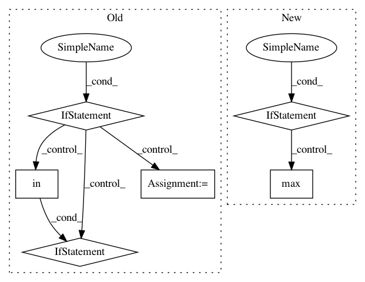

5e3cd5a9f1dfc0e320d3ff5a384505bf06904365,nilearn/plotting/displays.py,BaseSlicer,_map_show,#BaseSlicer#Any#Any#,423
Before Change
xmin_, xmax_, ymin_, ymax_, zmin_, zmax_ = \
xmin, xmax, ymin, ymax, zmin, zmax
if hasattr(data, "mask") and isinstance(data.mask, np.ndarray):
not_mask = np.logical_not(data.mask)
xmin_, xmax_, ymin_, ymax_, zmin_, zmax_ = \
get_mask_bounds(nibabel.Nifti1Image(not_mask.astype(np.int),
affine))
if kwargs.get("vmin") is None or kwargs.get("vmax") is None:
// Avoid dealing with masked arrays: they are slow
if not np.any(not_mask):
// Everything is masked
vmin = vmax = 0
else:
masked_map = np.asarray(data)[not_mask]
vmin = masked_map.min()
vmax = masked_map.max()
if kwargs.get("vmin") is None:
kwargs["vmin"] = vmin
if kwargs.get("vmax") is None:
kwargs["vmax"] = vmax
else:
if not "vmin" in kwargs:
kwargs["vmin"] = data.min()
if not "vmax" in kwargs:
kwargs["vmax"] = data.max()
bounding_box = (xmin_, xmax_), (ymin_, ymax_), (zmin_, zmax_)
// For each ax, cut the data and plot it
ims = []
After Change
data_2d_list.append(data_2d)
if kwargs.get("vmin") is None or kwargs.get("vmax") is None:
if "vmin" not in kwargs:
kwargs["vmin"] = max(d.min() for d in data_2d_list
if d is not None)
if "vmax" not in kwargs:
kwargs["vmax"] = max(d.max() for d in data_2d_list
if d is not None)
In pattern: SUPERPATTERN
Frequency: 3
Non-data size: 6
Instances
Project Name: nilearn/nilearn
Commit Name: 5e3cd5a9f1dfc0e320d3ff5a384505bf06904365
Time: 2014-12-04
Author: loic.esteve@ymail.com
File Name: nilearn/plotting/displays.py
Class Name: BaseSlicer
Method Name: _map_show
Project Name: pfnet/optuna
Commit Name: 7efee0558712883dd02400b4976e266c8e782f29
Time: 2020-04-27
Author: imamura@ms.k.u-tokyo.ac.jp
File Name: optuna/pruners/hyperband.py
Class Name: HyperbandPruner
Method Name: _try_initialization
Project Name: vatlab/SoS
Commit Name: 3239b81335c6a63e209ee9419f4efeea167e40bc
Time: 2019-08-05
Author: ben.bog@gmail.com
File Name: src/sos/workers.py
Class Name: WorkerManager
Method Name: __init__